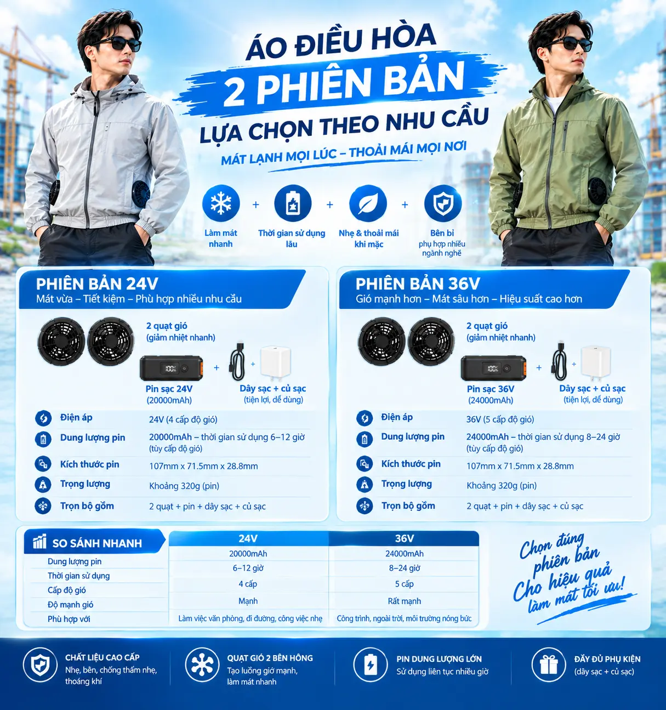
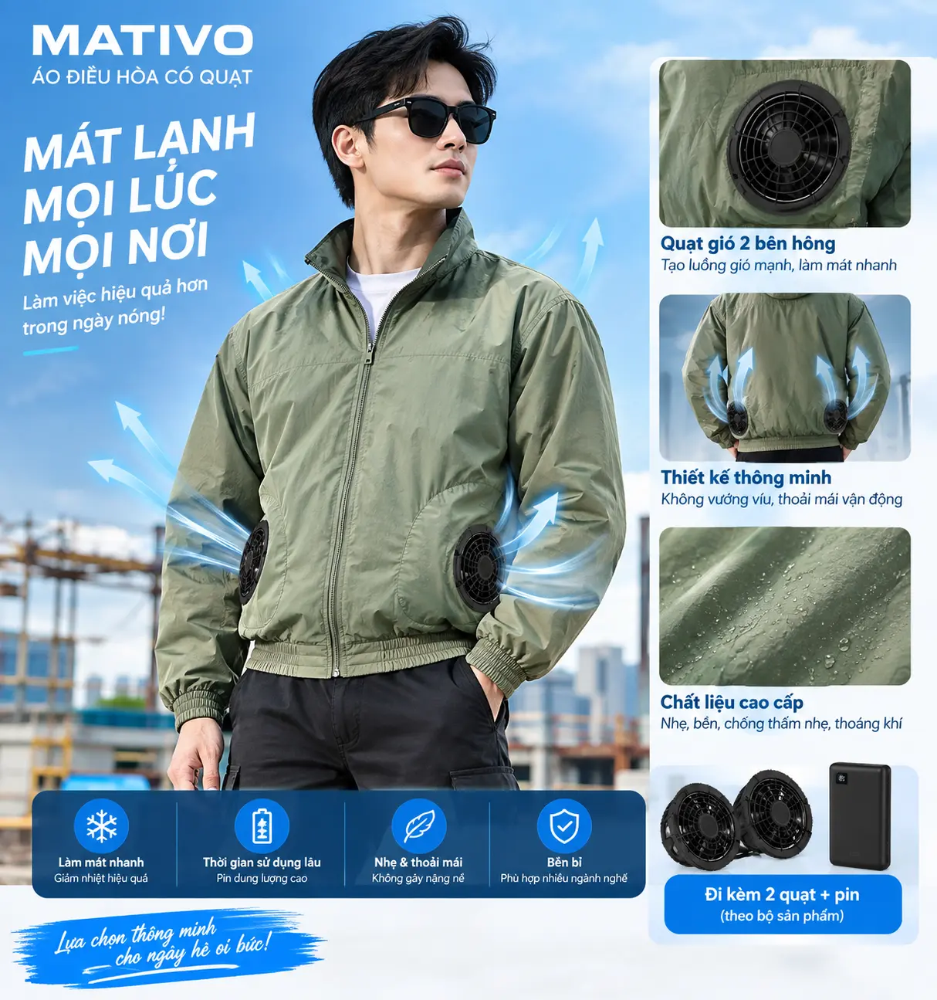

Quạt X24 24V
Không chổi than, ổ bi kép
Hệ thống quạt áo điều hòa MATIVO
Chọn X36 khi ưu tiên lực gió và hiệu năng 36V, hoặc X24 khi ưu tiên bộ pin gọn nhẹ, nhiều mức điện áp và thời lượng linh hoạt. Cả hai đều sử dụng động cơ không chổi than và chuẩn lắp quạt 9cm.
X24 và X36 đều tương thích lỗ lắp quạt phổ thông đường kính 9cm.

Động cơ không chổi thanỔn định khi vận hành dài giờ
Lắp đặt phổ thôngPhù hợp lỗ quạt 9cm
Pin hiển thị trực quanDễ theo dõi mức năng lượng
Dễ vệ sinhNắp quạt tháo rời
Mẫu MATIVO X36
Xem rõ bộ quạt 36V, pin 24.000mAh và cách sản phẩm đồng hành trong môi trường làm việc nhiệt độ cao.

Hai quạt 36V kết hợp pin 24.000mAh, dây sạc và phụ kiện để tạo luồng khí liên tục khi làm việc ngoài trời.
Chọn ảnh thu nhỏ để xem chi tiết.
Mẫu MATIVO X24
Khám phá bộ quạt 24V từ trải nghiệm mặc thực tế đến phụ kiện, thiết kế quạt và cấu tạo động cơ không chổi than.

Hai quạt bố trí cân đối hai bên hông, tạo luồng khí liên tục mà vẫn thoải mái vận động.
Chọn ảnh thu nhỏ để xem chi tiết.
Trong hộp có gì?
Hai cấu hình được trình bày riêng để bạn dễ chọn đúng điện áp và dung lượng pin. Phụ kiện sạc có thể thay đổi theo gói đặt hàng.

Không chổi than, ổ bi kép
20.000mAh, màn hình LED
Một nguồn kết nối hai quạt
Tiện sạc và mang theo
Củ sạc nhanhPhụ kiện tùy chọn theo cấu hình đặt hàng
Tùy chọn
Không chổi than, bốn cấp độ gió
24.000mAh, màn hình hiển thị
Cấp nguồn đồng thời cho hai quạt
Gọn nhẹ và thuận tiện mang theo
Củ sạcCung cấp theo cấu hình đặt hàng đã chọn
Theo góiHai phiên bản chủ lực
X24 cân bằng giữa trọng lượng, thời lượng và lực gió. X36 ưu tiên hiệu năng, tốc độ quạt cao hơn và pin dung lượng lớn hơn.
Hai quạt 24V không chổi than kết hợp pin N41-24 20.000mAh, bốn mức điện áp để chủ động lực gió và thời lượng.

Hai quạt 36V không chổi than kết hợp pin 24.000mAh, phù hợp môi trường nóng và nhu cầu ưu tiên lực gió.

Bền từ bên trong
X24 và X36 cùng hướng đến độ ổn định khi quay nhanh, dễ vệ sinh và gọn gàng khi lắp trên áo.
Giảm hao mòn và duy trì lực gió ổn định theo thời gian.
Hỗ trợ trục quạt vận hành chắc chắn ở tốc độ cao.
Dễ tiếp cận để vệ sinh bụi sau quá trình sử dụng.
Phù hợp nhiều mẫu áo quạt phổ biến trên thị trường.
X24 · bốn cấp điện áp
Riêng X24 cho phép chuyển giữa 24V / 20V / 17V / 13V. Chạm vào từng mức để xem thời gian sử dụng tham khảo với một pin đầy.
* Thời lượng X24 là số liệu tham khảo. Kết quả thực tế có thể thay đổi theo môi trường, tình trạng pin, thiết bị và cách sử dụng.
Thông số kỹ thuật
Thông tin kỹ thuật được Việt hóa từ bộ tài liệu sản phẩm và tách rõ theo từng cấu hình.
| MATIVO X36 | |
|---|---|
| Điện áp định mức | DC 36V (MAX) |
| Tốc độ danh định | Khoảng 8.600 vòng/phút |
| Công suất | Khoảng 12,2W mỗi quạt / 24,4W cho 2 quạt |
| Mức gió | 4 cấp điều chỉnh |
| Lỗ lắp tương thích | Đường kính 9cm |
| Kích thước quạt | Đường kính ngoài 10,8cm × dày tổng 4,2cm; phần trong áo khoảng 3,1cm |
| Động cơ / ổ bi | Không chổi than / ổ bi kép |
| Tuổi thọ thiết kế | Khoảng 5.000 giờ |
| Pin | 24.000mAh, màn hình LED |
| Cổng pin | DC / Type-C / USB |
| Thời gian sạc đầy tham khảo | Khoảng 7–8 giờ |
| MATIVO X24 | |
| Điện áp danh định | 24V |
| Tốc độ danh định | Khoảng 6.700 vòng/phút |
| Công suất | 6,2W mỗi quạt |
| Lỗ lắp tương thích | Đường kính 9cm |
| Kích thước quạt | Đường kính ngoài 10,8cm × dày 3,8cm |
| Động cơ / ổ bi | Không chổi than / ổ bi kép |
| Tuổi thọ thiết kế | Khoảng 5.000 giờ |
| Pin N41-24 | |
| Năng lượng / dung lượng | 77Wh / 20.000mAh / 3,85V |
| Các cấp điện áp | 24V / 20V / 17V / 13V |
| Kích thước / khối lượng | Khoảng 107 × 70–71,5 × 28–28,8mm / khoảng 320g |
| Cổng DC | 3,8 × 1,35mm |
| Type-C vào / ra | Tối đa 30W |
| Thời gian sử dụng | Khoảng 6 giờ (24V) / 7,8 giờ (20V) / 10 giờ (17V) / 20 giờ (13V) |
Linh hoạt mỗi ngày
X24 phù hợp khi cần gọn nhẹ và linh hoạt; X36 phù hợp hơn khi môi trường nóng và cường độ làm việc cao.
Ưu tiên X36 khi làm việc ngoài trời và cần lực gió mạnh trong môi trường nóng.
X24 gọn nhẹ, phù hợp khi phải di chuyển nhiều và cần bộ pin dễ mang theo.
Lựa chọn X24 hoặc X36 theo nhiệt độ môi trường và cường độ vận động.
Chủ động chọn cấu hình theo thời gian sử dụng, lực gió và đặc thù công việc.
Hỏi nhanh đáp gọn
Cả hai mẫu đều dùng chuẩn lỗ lắp đường kính 9cm, tương thích với nhiều mẫu áo điều hòa phổ thông có cùng kích thước.
X24 ưu tiên gọn nhẹ, pin N41 20.000mAh và bốn mức điện áp. X36 ưu tiên lực gió với nguồn 36V, tốc độ khoảng 8.600 vòng/phút và pin 24.000mAh.
Mỗi cấu hình gồm hai quạt, một pin và dây kết nối tương ứng. Phụ kiện sạc được cung cấp theo gói đặt hàng; riêng X24 dùng pin N41-24 và dây chia DC.
Tham khảo từ khoảng 6 giờ ở mức 24V đến khoảng 20 giờ ở mức 13V. Điều kiện thực tế có thể tạo ra khác biệt.
Có. Thiết kế nắp quạt tháo rời giúp thuận tiện làm sạch bụi sau quá trình sử dụng.
Pin N41-24 của X24 có Type-C vào/ra và cổng DC. Pin X36 có DC, Type-C và USB theo tài liệu sản phẩm.
MATIVO X24 & X36
Chọn phiên bản MATIVO phù hợp với môi trường làm việc và nhu cầu làm mát của bạn.
Xem lại bộ sản phẩm